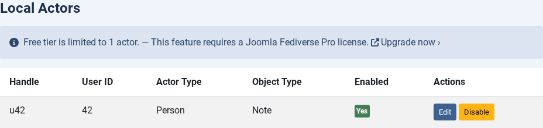
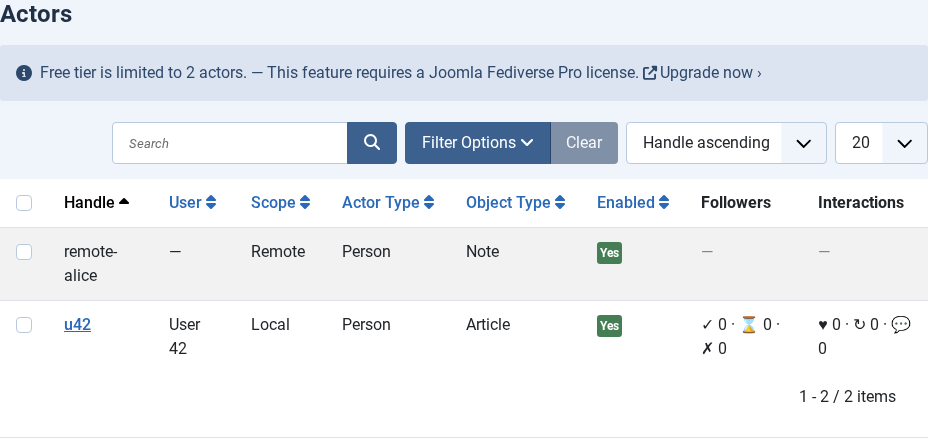
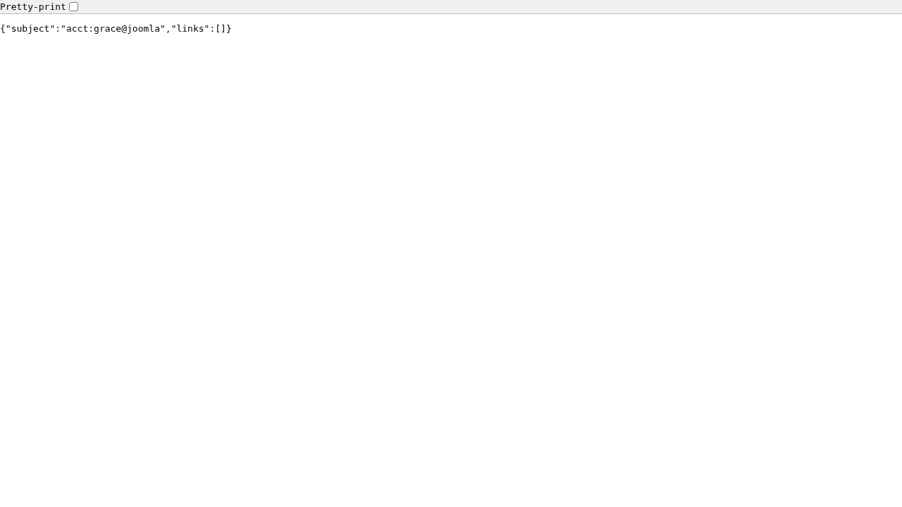

Creating Actors
| 🏠 Tutorial Home | ← Configuration | Publishing Content → |
| ## What Is an Actor? |
In ActivityPub, an actor is the identity that sends
and receives activities. Think of it as the Fediverse equivalent of a
social media account: it has a unique handle (like
grace@yoursite.example), a public key used to sign outgoing
HTTP requests, an inbox where remote servers deposit activities
addressed to it, and an outbox that exposes its published content to the
world. On a Joomla site every local Fediverse participant — an author,
an editor, a site bot — is represented by exactly one actor. |
Prerequisites
- Joomla Fediverse installed, both plugins enabled, and the Base URL / handle suffix set in Options (see Tutorial 02 — Configuration)
- A Joomla user account that the actor will be associated with
Step 1: Open the Actors View
 The Actors list on a fresh installation. No actors exist
yet.
The Actors list on a fresh installation. No actors exist
yet.
Step 2: Create a New Actor
Click New in the toolbar. The actor creation form opens.

Fill in the Handle field and associate the actor with a Joomla user.Fill in the following fields:
| Field | Value | Notes |
|---|---|---|
| Handle | grace |
Lowercase, no spaces. This becomes
grace@yoursite.example. |
| Joomla User | Grace (grace@yoursite.example) | Select the Joomla user account for this actor. |
| Status | Published | Unpublished actors are invisible to remote servers. |
| Actor Type | Person |
Leave as Person for regular author accounts. Set to
Service for automated/bot actors. |
| Object Type | Note |
The ActivityPub type for federated articles. Note is
universally supported. Use Article for AP clients that
render full articles; Image or Video for
media-centric feeds. |
Leave all other fields at their defaults unless you have a specific reason to change them. Click Save & Close.
Tip: The handle is permanent. Once a remote server has resolved
grace@yoursite.exampleand cached the actor document, renaming the actor will break those cached references. Choose a handle you are happy to keep.
Step 3: Confirm the Actor Appears in the List
Back on the Actors list you should now see a row for grace with a green status indicator.

The Actors list now shows grace’s actor with a Published status.Step 4: Verify via WebFinger
Any Fediverse server that wants to talk to grace will first perform a WebFinger lookup. Test it yourself by visiting this URL in your browser (substitute your own domain):
https://yoursite.example/.well-known/webfinger?resource=acct:grace@yoursite.exampleYou should receive a JSON response similar to:
{
"subject": "acct:grace@yoursite.example",
"links": [
{
"rel": "self",
"type": "application/activity+json",
"href": "https://yoursite.example/activitypub/actors/grace"
}
]
}
A successful WebFinger response forgrace@yoursite.example. The href
in the self link is the actor URI.
Step 5: Verify the Actor Document
Follow the href from the WebFinger response (or navigate
directly to /activitypub/actors/grace) with an
Accept: application/activity+json header. The response is
the full ActivityPub actor document:
{
"@context": "https://www.w3.org/ns/activitystreams",
"id": "https://yoursite.example/activitypub/actors/grace",
"type": "Person",
"preferredUsername": "grace",
"inbox": "https://yoursite.example/activitypub/actors/grace/inbox",
"outbox": "https://yoursite.example/activitypub/actors/grace/outbox",
"publicKey": {
"id": "https://yoursite.example/activitypub/actors/grace#main-key",
"owner": "https://yoursite.example/activitypub/actors/grace",
"publicKeyPem": "-----BEGIN PUBLIC KEY-----\n..."
}
}The presence of inbox, outbox, and
publicKey.publicKeyPem confirms the actor is fully
operational. Remote servers use the public key to verify that activities
signed by grace actually came from your server.
Tip: If you configured the actor with Actor Type = Service, the document will show
"type": "Service"instead. This signals to Fediverse servers that the account is automated.
Actor Type and Object Type
Actor Type: Person vs Service
| Type | When to use |
|---|---|
| Person | Regular author accounts — a human contributor whose articles are federated. This is the default and the most widely supported type. |
| Service | Automated or bot accounts — a feed bot, a news account, or any actor that posts without direct human involvement. Mastodon, GotoSocial, and other clients display a bot badge next to Service actors. |
The chosen type appears in the ActivityPub actor document as
"type": "Person" or "type": "Service". Remote
servers use this to decide how to present the account to their users
(e.g. show a bot label, omit from follower suggestions).
Object Type: Note, Article, Image, Video
The Object Type controls the ActivityPub
type field of each published object (e.g. a federated
article). Different Fediverse clients render these types
differently:
| Type | Best for | Client behaviour |
|---|---|---|
| Note | General-purpose text posts | Universally supported. Mastodon, GotoSocial, Pleroma etc. render the full content inline. Recommended default. |
| Article | Long-form editorial content | Clients that support Article (e.g. Friendica, Lemmy,
some Mastodon forks) show a title + summary with a “read more” link.
Clients that do not support Article typically fall back to
rendering it as a Note. |
| Image | Photo or image-centric content | Signals that the primary payload is an image attachment. Media-focused clients highlight the image. |
| Video | Video content | Signals a video attachment as the primary payload. Peertube-aware clients may embed the player. |
How to change: Open the actor edit form, locate the Object Type dropdown, select the desired value, and save. New articles federated after the change use the new type; previously federated articles retain the type that was in effect when they were first sent.
Common Issues
| Symptom | Likely cause | Solution |
|---|---|---|
| WebFinger returns 404 after creating the actor | System - Fediverse plugin disabled | Enable plg_system_fediverse |
| WebFinger returns 404 even with plugin enabled | Handle suffix does not match the request domain | Check the handle suffix in Components → Fediverse → Options |
| Duplicate handle error on save | An actor with that handle already exists (possibly deleted but not purged) | Choose a different handle or purge the old actor from the database |
Actor document missing publicKey |
Key-pair generation failed during actor creation | Delete and re-create the actor; check that OpenSSL is available to PHP |
Actor document shows "type": "Person" even after
changing Actor Type |
Browser or server cached the old actor document | Clear the Joomla cache (System → Clear Cache) and wait for remote servers to refresh their cache (TTL varies by server, typically 24 h) |